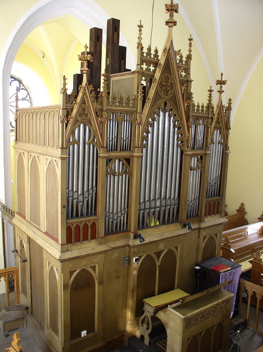

Janovické varhany jsou vırobkem firmy K. Neusser z Nového Jièína a pocházejí z devadesátıch let minulého století (pøesnı rok pùvodu se nám nepodaøilo zjistit, nejpravdìpodobnìjší se jeví rok 1890, tj. rok pøed vysvìcením kostela, na tento letopoèet jsou datovány i noviny, které jsme nalezli v mìchu). Jedná se o nástroj s celodøevìnou mechanickou trakturou, vzdušnice má rejstøíkové kancely a ku�elkové tónové ventily. Hrací stùl je jednomanuálovı, je vzdálen od skøínì nástroje a otoèen klávesnicí k nástroji, pøevody jsou vedeny pomocí úhelníkù a abstraktù pod podlá�kou lavice varhaníka. Manuál má 54 kláves (4 1/2 oktávy, rozsah C-f3). Pedálová klávesnice má 24 pedálù (2 plné oktávy C-h). Hlavní stroj má 9 znìjících rejstøíkù a jednu oktávovou spojku, pedálovı stroj 3 rejstøíky a oktávovou spojku. Rejstøíky jsou zapínány pomocí táhel nad klávesnicí. Dále jsou v hracím stole tøi pedálové spínaèe pevnıch kombinací – kolektivù rejstøíkù – Mezzoforte, Forte a Pleno. Hlavní stroj má 648 píš�al, pedálovı stroj 72 píš�al (celı nástroj 720 píš�al). Pøívod vzduchu k píš�alám ovládá ve vzdušnici 558 tónovıch a 24 rejstøíkovıch ventilù. Všechny rejstøíky jsou retní, nástroj neobsahuje jazykové hlasy. Provedení principálovıch hlasù, smykù i fléten je vìtšinou kombinované, èást rejstøíku je vystavìna z kovovıch píš�al, èást (vìtšinou velké píš�aly nejni�ší oktávy) je provedena ve døevì. Prospektové píš�aly jsou cínové a patøí rejstøíkùm Principal a Octav, v zadní èásti nástroje je pedálovı stroj. Pozoruhodnı je rozdíl ve velikostech píš�al, nejvìtší døevìná píš�ala má délku 5,5m, šíøku 30x30cm a vá�í pøes 40kg, nejmenší døevìná píš�ala má délku 15cm a šíøku 2x3cm. Nejvìtší kovová píš�ala má pak délku 2,5m a prùmìr 15cm, nejmenší je dlouhá 15cm (z toho vlastní “pískající” èást jen 2cm) a prùmìr 5mm. Ve skøíni nástroje je dále zásobníkovı mìch, pod kterım je klínovı èerpací mìch pro manuální plnìní. K mìchu je pøiveden vzduchovodem ze zadní strany vzduch èerpanı elektrickım ventilátorem, kterı je umístìn v samostatné skøíni v kapli za nástrojem. Na vzduchovodu je dále regulátor tlaku a mìchovı tlumiè rázù pøi uzavírání ventilù. Celı nástroj je krásnou ukázkou øemeslné dovednosti našich pøedkù, pøesto�e je celá mechanika ze døeva, kù�e a papíru, dokázala plnì fungovat více ne� sto let bez záva�nìjší opravy. |

Dispozice nástroje:Manuál C-f3:
Pedál C-h:
Pomocná zaøízení – spínaèe kolektivù – pevnıch kombinací rejstøíkù:
|

 (na
obsah)
(na
obsah)